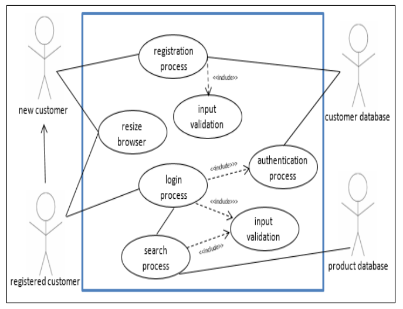

The Advanced Higher Computing Science course builds on the knowledge, understanding and practical skills developed by learners in the Higher Computing Science course. Learners gain advanced programming, development and research skills, and an understanding of the role and impact of contemporary computing technologies.
